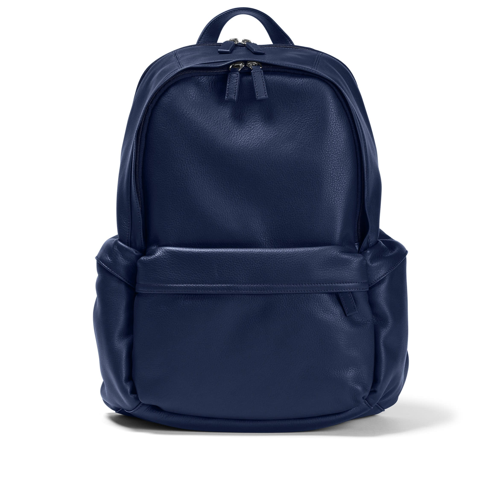
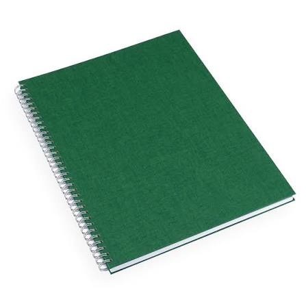

Lost Items
Items reported lost
Review these example reports. If an item looks familiar, contact the person who reported it and agree on a safe way to confirm ownership.
Current Lost Items listings
| Photo | Item | Description | Location | Date |
|---|---|---|---|---|
 |
Blue backpack | Large, blue backpack with a red zipper | Library, second floor | 14 November 2026 |
 |
Green notebook | Small, green notebook with a yellow highlighter | Science building | 15 November 2026 |
Did you lose something?
Submit a report with the item's description, the last place you remember seeing it, and the date.
Report a lost item